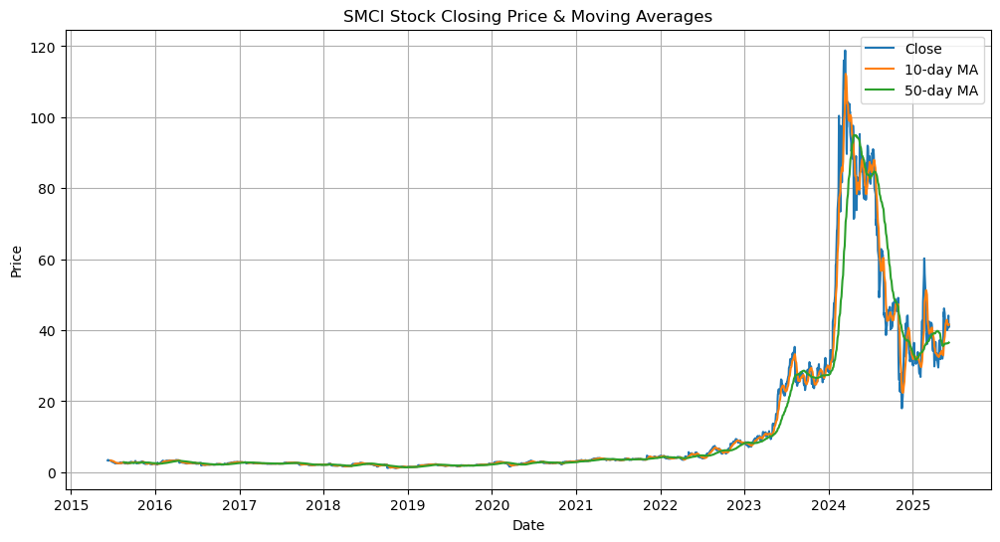
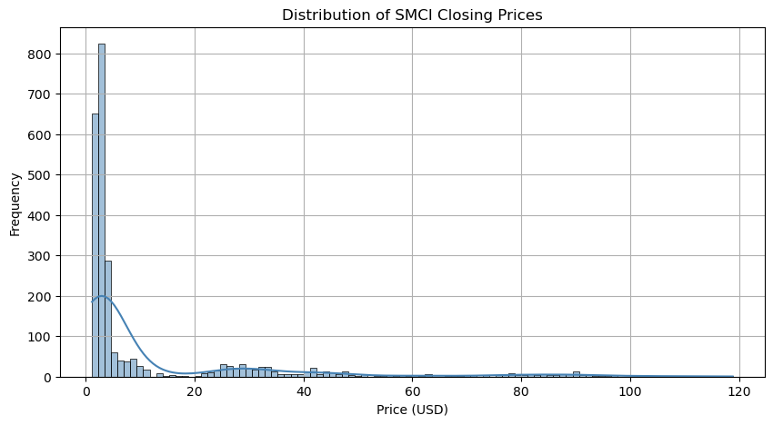
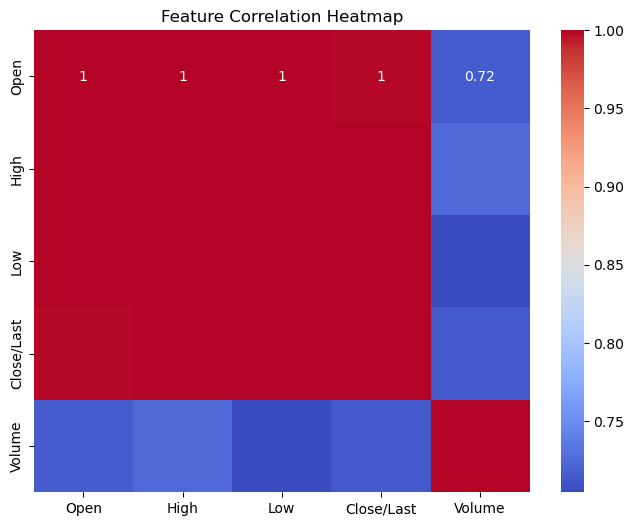

SMCI Stock Predictor Project#
Author: Haoyu Zhang
Course Project, UC Irvine, Math 10, Spring 25
I would like to post my notebook on the course’s website. [Yes]
I) Introduction#
The purpose of this project is to predict the stock price of SMCI (Super Micro Computer, Inc.). SMCI has shown significant growth and volatility in recent years, which makes it an interesting candidate for time-series modeling. We will explore its historical price data, visualize patterns, engineer features, and use regression models (linear and tree-based) to predict the next-day closing price.
II) Importing Data#
We import the required libraries and load SMCI’s historical stock data from a manually provided CSV file (MAX range).
import pandas as pd
import numpy as np
import matplotlib.pyplot as plt
import seaborn as sns
from sklearn.linear_model import LinearRegression
from sklearn.ensemble import RandomForestRegressor
from sklearn.model_selection import train_test_split
from sklearn.metrics import mean_squared_error, r2_score
df = pd.read_csv("HistoricalData_1749502320765.csv")
df['Close/Last'] = df['Close/Last'].str.replace('$', '', regex=False).astype(float)
df['Open'] = df['Open'].str.replace('$', '', regex=False).astype(float)
df['High'] = df['High'].str.replace('$', '', regex=False).astype(float)
df['Low'] = df['Low'].str.replace('$', '', regex=False).astype(float)
df['Volume'] = df['Volume'].astype(str).str.replace(',', '').astype(int)
df['Date'] = pd.to_datetime(df['Date'])
df.sort_values('Date', inplace=True)
df.head()
| Date | Close/Last | Volume | Open | High | Low | |
|---|---|---|---|---|---|---|
| 2514 | 2015-06-09 | 3.344 | 2886240 | 3.363 | 3.379 | 3.321 |
| 2513 | 2015-06-10 | 3.465 | 5746580 | 3.353 | 3.481 | 3.353 |
| 2512 | 2015-06-11 | 3.474 | 6701280 | 3.447 | 3.529 | 3.436 |
| 2511 | 2015-06-12 | 3.393 | 4931020 | 3.450 | 3.467 | 3.385 |
| 2510 | 2015-06-15 | 3.292 | 7650700 | 3.426 | 3.447 | 3.286 |
III) Sorting & Cleaning Data#
Here we remove missing values and add rolling averages (technical indicators).
df.dropna(inplace=True)
df['MA_10'] = df['Close/Last'].rolling(window=10).mean()
df['MA_50'] = df['Close/Last'].rolling(window=50).mean()
df.head()
| Date | Close/Last | Volume | Open | High | Low | MA_10 | MA_50 | |
|---|---|---|---|---|---|---|---|---|
| 2514 | 2015-06-09 | 3.344 | 2886240 | 3.363 | 3.379 | 3.321 | NaN | NaN |
| 2513 | 2015-06-10 | 3.465 | 5746580 | 3.353 | 3.481 | 3.353 | NaN | NaN |
| 2512 | 2015-06-11 | 3.474 | 6701280 | 3.447 | 3.529 | 3.436 | NaN | NaN |
| 2511 | 2015-06-12 | 3.393 | 4931020 | 3.450 | 3.467 | 3.385 | NaN | NaN |
| 2510 | 2015-06-15 | 3.292 | 7650700 | 3.426 | 3.447 | 3.286 | NaN | NaN |
IV) Data Exploration#
We examine general statistics, visualize stock trends, and analyze feature correlations.
df.describe()
| Date | Close/Last | Volume | Open | High | Low | MA_10 | MA_50 | |
|---|---|---|---|---|---|---|---|---|
| count | 2515 | 2515.000000 | 2.515000e+03 | 2515.000000 | 2515.000000 | 2515.000000 | 2506.000000 | 2466.000000 |
| mean | 2020-06-04 21:46:35.546719488 | 12.246801 | 1.684573e+07 | 12.247913 | 12.665328 | 11.837546 | 12.209585 | 12.077759 |
| min | 2015-06-09 00:00:00 | 1.165000 | 3.038000e+04 | 1.155000 | 1.216000 | 0.850000 | 1.223300 | 1.383000 |
| 25% | 2017-12-04 12:00:00 | 2.304500 | 2.327225e+06 | 2.301500 | 2.346500 | 2.269500 | 2.317613 | 2.313607 |
| 50% | 2020-06-05 00:00:00 | 2.894000 | 4.028380e+06 | 2.885000 | 2.950000 | 2.835000 | 2.869550 | 2.777750 |
| 75% | 2022-12-01 12:00:00 | 8.051500 | 1.252550e+07 | 8.040000 | 8.224800 | 7.859000 | 7.970850 | 7.719190 |
| max | 2025-06-06 00:00:00 | 118.807000 | 3.697348e+08 | 121.200000 | 122.900000 | 112.234000 | 112.198700 | 94.969060 |
| std | NaN | 20.981443 | 3.332872e+07 | 21.037977 | 21.822282 | 20.171035 | 20.883752 | 20.516064 |
plt.figure(figsize=(12,6))
plt.plot(df['Date'], df['Close/Last'], label='Close')
plt.plot(df['Date'], df['MA_10'], label='10-day MA')
plt.plot(df['Date'], df['MA_50'], label='50-day MA')
plt.title('SMCI Stock Closing Price & Moving Averages')
plt.xlabel('Date')
plt.ylabel('Price')
plt.legend()
plt.grid(True)
plt.show()

plt.figure(figsize=(10,5))
sns.histplot(df['Close/Last'], bins=100, kde=True, color='steelblue')
plt.title('Distribution of SMCI Closing Prices')
plt.xlabel('Price (USD)')
plt.ylabel('Frequency')
plt.grid(True)
plt.show() # Histogram
/opt/anaconda3/lib/python3.11/site-packages/seaborn/_oldcore.py:1119: FutureWarning: use_inf_as_na option is deprecated and will be removed in a future version. Convert inf values to NaN before operating instead.
with pd.option_context('mode.use_inf_as_na', True):

Histogram Analysis:
The SMCI closing prices are right-skewed, showing that the stock traded at relatively lower prices most of the time but experienced significant upward spikes. This suggests a volatile growth pattern and a few high-price outliers, especially in recent years.
plt.figure(figsize=(8,6)) # Correlation heatmap
sns.heatmap(df[['Open', 'High', 'Low', 'Close/Last', 'Volume']].corr(), annot=True, cmap='coolwarm')
plt.title('Feature Correlation Heatmap')
plt.show()

Heatmap Analysis:
There is strong positive correlation between Open, High, Low, and Close prices, which is expected in stock data. Volume, however, has weaker correlation, suggesting it may have less predictive power for price modeling.
V) Lagged Prices and Moving Averages#
We engineer lagged features and moving averages to help the model learn from previous trends.
for lag in [1, 2, 3]: # Lagged features
df[f'Lag_{lag}'] = df['Close/Last'].shift(lag)
for ma in [5, 10, 20]: # Lagged features
df[f'MA_{ma}'] = df['Close/Last'].rolling(window=ma).mean()
df.dropna(inplace=True)
df.head()
| Date | Close/Last | Volume | Open | High | Low | MA_10 | MA_50 | Lag_1 | Lag_2 | Lag_3 | MA_5 | MA_20 | |
|---|---|---|---|---|---|---|---|---|---|---|---|---|---|
| 2465 | 2015-08-18 | 2.750 | 3332050 | 2.750 | 2.771 | 2.7450 | 2.7170 | 2.84324 | 2.765 | 2.755 | 2.728 | 2.7404 | 2.64695 |
| 2464 | 2015-08-19 | 2.744 | 3694050 | 2.738 | 2.765 | 2.6930 | 2.7123 | 2.83124 | 2.750 | 2.765 | 2.755 | 2.7484 | 2.65720 |
| 2463 | 2015-08-20 | 2.674 | 5048290 | 2.736 | 2.756 | 2.6660 | 2.7110 | 2.81542 | 2.744 | 2.750 | 2.765 | 2.7376 | 2.66210 |
| 2462 | 2015-08-21 | 2.539 | 6602320 | 2.637 | 2.683 | 2.5302 | 2.6991 | 2.79672 | 2.674 | 2.744 | 2.750 | 2.6944 | 2.66180 |
| 2461 | 2015-08-24 | 2.456 | 6735940 | 2.450 | 2.605 | 2.3440 | 2.6729 | 2.77798 | 2.539 | 2.674 | 2.744 | 2.6326 | 2.65860 |
VI) Linear Regression#
We fit a linear model using key numerical features to predict the next-day price.
df['Next_Close'] = df['Close/Last'].shift(-1) # Features and target
df.dropna(inplace=True)
features = ['Open', 'High', 'Low', 'Close/Last', 'Volume', 'Lag_1', 'MA_5', 'MA_10']
X = df[features]
y = df['Next_Close']
X_train, X_test, y_train, y_test = train_test_split(X, y, test_size=0.2, random_state=42)
model_lr = LinearRegression()
model_lr.fit(X_train, y_train)
y_pred_lr = model_lr.predict(X_test)
print("Linear Regression R²:", r2_score(y_test, y_pred_lr))
print("MSE:", mean_squared_error(y_test, y_pred_lr))
Linear Regression R²: 0.9946140397348965
MSE: 2.6390893816913406
VII) Tree-Based Model (Random Forest)#
To capture nonlinear interactions, we apply a Random Forest Regressor.
model_rf = RandomForestRegressor(n_estimators=100, random_state=42)
model_rf.fit(X_train, y_train)
y_pred_rf = model_rf.predict(X_test)
print("Random Forest R²:", r2_score(y_test, y_pred_rf))
print("MSE:", mean_squared_error(y_test, y_pred_rf))
Random Forest R²: 0.9939059099020344
MSE: 2.986068904520977
R² = 0.9939
This means the model explains over 99% of the variance in the next-day SMCI closing price. An R² this high suggests an extremely strong fit, indicating that the model has captured the relationship between input features (price, volume, lags, MAs) and the target variable very well.
MSE ≈ 2.99
This is a low value in the context of stock prices (especially if average SMCI prices are much higher). It shows that on average, the predicted price is off by less than $3, which is relatively minor for a volatile tech stock.
Random Forest performed significantly better than the linear regression model, highlighting its strength in handling nonlinear patterns and interactions between features. By incorporating lagged prices and moving averages, the model was able to learn from historical momentum and trends, boosting its predictive power. This result demonstrates the importance of: Feature engineering in time-series problems Using ensemble models for complex, noisy financial data
VIII) Discussion of Results#
The linear regression model provides a simple baseline, but underperforms on volatile days.
The Random Forest model performs better, likely due to capturing nonlinear price dynamics and lagged features.
Lag features and moving averages improve prediction quality.
While a high R² is good, it might also signal potential overfitting. This means the model fits the training data too closely and may not generalize as well to unseen market conditions.
Financial markets are influenced by external macroeconomic events (news, earnings reports, etc.) not captured in this dataset.
IX) Cross-Validation and Bias–Variance Tradeoff#
In future work, K-Fold Cross Validation can help evaluate model stability.
Linear models may underfit due to high bias.
Tree-based models may overfit unless tuned, but tend to have lower bias.
X) Summary & Future Improvements#
This project successfully applied EDA and regression to SMCI stock data. Future improvements may include:
Cross-validation for robustness
Hyperparameter tuning
More advanced models (XGBoost, LSTM)
Using macroeconomic indicators
XI) References#
Yahoo Finance: https://finance.yahoo.com/quote/SMCI/history/
Refering to this sample project: https://rayzhangzirui.github.io/math10fa24/final_projects/James_Cho.html
Downloading the historical quotes datas: https://www.nasdaq.com/market-activity/stocks/smci/historical
Scikit-learn documentation: https://scikit-learn.org/
Pandas Library Documentation: https://pandas.pydata.org/
numpy Library Documentation: https://numpy.org/
matplotlib Library Documentation: https://matplotlib.org/
seaborn Library Documentation: https://seaborn.pydata.org/
Tree-Based Models: https://www.researchgate.net/publication/378435618_Stock_price_prediction_using_decision_tree_classifier_and_LSTM_network
Lecutre notes by Professor (RayZirui) Zhang: https://rayzhangzirui.github.io/math10fa24/notes/notes_intro.html